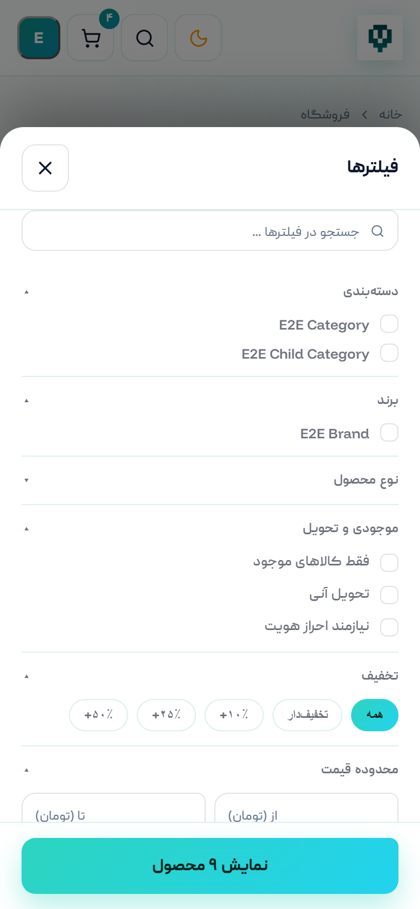
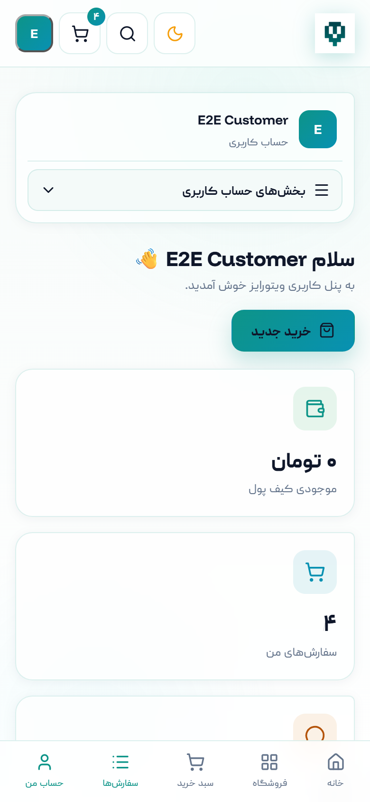
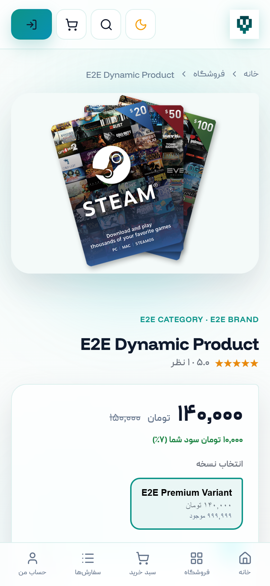

#c1#این فصل نمای کلی فروشگاه ویتورایز را معرفی میکند: نوار بالای سایت، مسیرهای اصلی، جستوجو، تغییر حالت نمایش و آنچه هنگام باز شدن سایت میبینید. اگر نخستین بار است از ویتورایز استفاده میکنید، خواندن همین فصل برای شروع کافی است.
صفحهٔ نخست، نقطهٔ شروع خرید است و مهمترین بخشهای فروشگاه را در یک نگاه نشان میدهد. در بالای همهٔ صفحهها یک نوار ثابت وجود دارد که در تمام مسیرها همراه شماست.
اجزای نوار بالا از راست به چپ:
| بخش | کاربرد |
|---|---|
| نشان و نام «ویتورایز» | بازگشت به صفحهٔ نخست از هر کجای سایت. |
| خانه / فروشگاه / دستهبندیها / وبلاگ / سوالات متداول | مسیرهای اصلی سایت. «فروشگاه» فهرست کامل محصولات و «دستهبندیها» نمای گروهبندیشدهٔ آنهاست. |
| کادر جستوجو | جستوجوی محصول بر اساس نام، بازی یا نوع گیفت کارت. |
| تغییر حالت نمایش | جابهجایی میان حالت روشن و تاریک. |
| علاقهمندیها | فهرست محصولاتی که برای بعد نشان کردهاید. |
| سبد خرید | ورود به سبد خرید؛ عدد کنار آن تعداد اقلام فعلی را نشان میدهد. |
| حساب کاربری | اگر وارد نشده باشید «ورود» و «ثبتنام» و اگر وارد شده باشید، نشان حساب شما و منوی دسترسی سریع به ناحیهٔ کاربری و «خروج از حساب». |
در پایین همهٔ صفحهها نیز فوتر قرار دارد که دسترسی سریع، لینک صفحات اطلاعرسانی (دربارهٔ ما، قوانین، حریم خصوصی، تماس با ما) و راههای ارتباط با پشتیبانی را در خود دارد.
با کلیک روی نشان ماه/خورشید در نوار بالا، نمایش سایت میان حالت روشن و تاریک جابهجا میشود. انتخاب شما در همان مرورگر بهخاطر سپرده میشود و دفعهٔ بعد نیز اعمال میگردد. اگر تا به حال انتخابی نکرده باشید، ویتورایز از تنظیم سیستمعامل یا مرورگر شما پیروی میکند.
هنگام نخستین باز شدن بخشهایی از سایت، ممکن است برای لحظهای یک تصویر بارگذاری ویتورایز نمایش داده شود. این تصویر بهمحض آمادهشدن صفحه بهصورت خودکار کنار میرود. فروشگاه ممکن است تصویر یا انیمیشن اختصاصی خود را برای این لحظه تنظیم کرده باشد؛ در این حالت بهجای نشان پیشفرض ویتورایز، تصویر انتخابی فروشگاه را میبینید. این موضوع کاملاً ظاهری است و نیازی به هیچ اقدامی از سوی شما ندارد.
#c2#ویتورایز سه مسیر برای رسیدن به محصول در اختیار شما میگذارد: مرور فروشگاه، حرکت از دستهبندیها و جستوجوی مستقیم. این فصل هر سه را با ابزارهای فیلتر و مرتبسازی توضیح میدهد.
صفحهٔ «فروشگاه» همهٔ محصولات قابل خرید را نشان میدهد. در سمت راست، ستون فیلترها و در بالای فهرست، گزینهٔ مرتبسازی قرار دارد.

با فیلترها میتوانید فهرست را بر اساس دسته، برند و محدودهٔ قیمت محدود کنید و با مرتبسازی، ترتیب نمایش را تغییر دهید. هر بار که فیلتری را تغییر میدهید، فهرست بدون نیاز به بارگذاری دوبارهٔ صفحه بهروز میشود. روی هر کارت محصول، تصویر، عنوان، قیمت و در صورت وجود برچسب تخفیف دیده میشود؛ با کلیک روی کارت وارد صفحهٔ محصول میشوید.
صفحهٔ «دستهبندیها» گروههای اصلی فروشگاه را نشان میدهد و برای زمانی مناسب است که هنوز محصول مشخصی در ذهن ندارید و میخواهید سبد کالاها را مرور کنید.

اگر نام محصول را میدانید، سریعترین راه کادر جستوجوی نوار بالاست: بخشی از نام را بنویسید تا نتایج مرتبط نمایش داده شود.
روی صفحههای کوچک، ستون فیلتر برای صرفهجویی در فضا پنهان میشود و بهجای آن دکمهٔ شناور فیلتر در گوشهٔ صفحه قرار میگیرد. با لمس آن، پنجرهٔ فیلترها از پایین صفحه بالا میآید.

#c3#صفحهٔ محصول همهٔ چیزی است که پیش از خرید باید بدانید: تصویر، قیمت، توضیحات، نوع تحویل و اطلاعاتی که فروشگاه برای انجام سفارش از شما میخواهد.

بخشهای کلیدی این صفحه:
| بخش | توضیح |
|---|---|
| گالری تصویر | تصویر اصلی و تصاویر تکمیلی محصول. |
| قیمت | قیمت فروش. اگر محصول تخفیف داشته باشد، قیمت پیشین نیز نمایش داده میشود. |
| نسخه/واریانت | برخی محصولات چند نسخه دارند (مثلاً مبلغهای مختلف گیفت کارت). پیش از افزودن به سبد، نسخهٔ موردنظر را انتخاب کنید. |
| تعداد | تعداد واحدهایی که میخواهید بخرید. برای محصولات «تحویل آنی» بهازای هر واحد یک کد جداگانه دریافت میکنید. |
| افزودن به سبد خرید | محصول را به سبد اضافه میکند. اگر محصول به اطلاعات تکمیلی نیاز داشته باشد، ابتدا فرم آن باز میشود. |
| توضیحات و ویژگیها | شرح کامل محصول، شرایط استفاده و پرسشهای پرتکرار همان محصول. |
برخی محصولات برای انجام سفارش به اطلاعاتی از شما نیاز دارند؛ مثلاً نشانی ایمیل حساب بازی یا شناسهٔ کاربری. با زدن «افزودن به سبد خرید» فرم این اطلاعات باز میشود.
هر فیلد بهروشنی مشخص شده است: فیلدهای الزامی با ستارهٔ قرمز و فیلدهای اختیاری با برچسب «اختیاری» علامتگذاری میشوند. اگر فیلد الزامی را خالی بگذارید یا مقدار نامعتبر وارد کنید، هنگام تأیید فرم، پیام خطا دقیقاً زیر همان فیلد نمایش داده میشود و صفحه بهصورت خودکار روی نخستین فیلد ایراددار قرار میگیرد تا اصلاح آن ساده باشد. تا وقتی فیلدهای الزامی درست پر نشوند، محصول به سبد اضافه نمیشود.
اگر میخواهید محصولی را برای بعد نگه دارید، آن را به «علاقهمندیها» اضافه کنید. فهرست کامل از ناحیهٔ کاربری، بخش «علاقهمندیها» در دسترس است و هر آیتم را میتوانید از همانجا حذف کنید یا به سبد خرید ببرید.

#c4#سبد خرید، محل بازبینی نهایی پیش از پرداخت است: اقلام، تعداد، اطلاعات واردشده و جمع مبلغ.

در هر ردیف میتوانید تعداد را کم و زیاد کنید، اطلاعات واردشده برای آن قلم را ببینید یا ویرایش کنید و در صورت نیاز ردیف را حذف کنید. خلاصهٔ سمت چپ، تعداد اقلام و جمع کل را نشان میدهد و دکمهٔ ادامه، شما را به مرحلهٔ تسویهحساب میبرد.
برای افزودن محصول به سبد خرید لازم نیست از ابتدا وارد حساب شوید؛ میتوانید آزادانه خرید خود را بچینید و ورود را به مرحلهٔ پرداخت موکول کنید.
سبد خرید شما در همان مرورگر نگهداری میشود؛ بنابراین اگر صفحه را تازهسازی کنید، به صفحهٔ دیگری بروید، در زبانهٔ دیگری همان سایت را باز کنید یا حتی مرورگر را ببندید و بعداً برگردید، اقلام سبد سر جای خود باقی میمانند.
#c5#برای تکمیل خرید، پیگیری سفارش و دریافت کدها به یک حساب کاربری نیاز دارید. ساخت حساب فقط چند لحظه طول میکشد.
از نوار بالای سایت «ثبتنام» را انتخاب کنید و فرم را کامل کنید. پس از ثبت موفق، حساب شما ساخته و وارد ناحیهٔ کاربری میشوید.

در صفحهٔ ورود، شمارهٔ موبایل و رمز عبور خود را وارد کنید.

اگر شماره یا رمز نادرست باشد، پیام خطای روشنی بالای فرم نمایش داده میشود و شما روی همان صفحه میمانید تا دوباره تلاش کنید. پس از چند تلاش ناموفق پیاپی، ورود برای مدت کوتاهی محدود میشود؛ این محدودیت برای محافظت از حساب شماست و پس از گذشت زمان کوتاهی برطرف میگردد.
اگر رمز عبور را فراموش کردهاید، از صفحهٔ ورود گزینهٔ بازیابی رمز را انتخاب کنید، شمارهٔ موبایل خود را وارد و کد ارسالشده را تأیید کنید تا رمز تازهای تعیین شود.

اگر پیش از ورود محصولاتی را به سبد افزوده باشید، پس از ورود به حساب، همان اقلام به سبد حساب کاربری شما منتقل میشوند و خرید را از همانجا که رها کرده بودید ادامه میدهید.
اگر از قبل هم سبدی در حساب خود داشته باشید، دو سبد با هم ترکیب میشوند: اقلام تازه به سبد قبلی اضافه میشوند و چیزی از دست نمیرود. اگر یک محصول با اطلاعات کاملاً یکسان در هر دو سبد باشد، بهجای دو ردیف تکراری، تعداد همان ردیف افزایش مییابد.
#c6#مرحلهٔ تسویهحساب در سه گام نمایش داده میشود: «سبد خرید»، «اطلاعات و پرداخت» و «تکمیل سفارش». نوار بالای صفحه همیشه نشان میدهد در کدام گام هستید.

در این صفحه چهار بخش دیده میشود:
کد را در کادر «کد تخفیف خود را وارد کنید» بنویسید و «اعمال» را بزنید. اگر کد معتبر باشد، مبلغ تخفیف بلافاصله در خلاصهٔ سفارش نمایش داده میشود و «مبلغ قابل پرداخت» کاهش مییابد.
اگر کد پذیرفته نشود، پیام روشنی دربارهٔ علت آن میبینید. رایجترین دلایل عبارتاند از: نادرستبودن کد، پایانیافتن مهلت اعتبار، نرسیدن مبلغ سفارش به حداقل لازم برای آن کد، و بهپایانرسیدن ظرفیت استفاده از کد.
اگر فروشگاه مالیات بر ارزش افزوده را فعال کرده باشد، در «خلاصه سفارش» یک ردیف جداگانه برای مالیات نمایش داده میشود و در محاسبهٔ «مبلغ قابل پرداخت» لحاظ میگردد. در این حالت خلاصهٔ سفارش بهترتیب شامل جمع اقلام، تخفیف (در صورت وجود)، مالیات و در انتها مبلغ نهایی است.
اگر فروشگاه این گزینه را فعال نکرده باشد — مانند نمونهٔ تصویر بالا — هیچ ردیف مالیاتی نمایش داده نمیشود و «مبلغ قابل پرداخت» برابر جمع کل پس از تخفیف است.
پرداخت اینترنتی: با انتخاب این گزینه و زدن دکمهٔ پرداخت، به درگاه بانکی امن منتقل میشوید. پس از پرداخت، بهصورت خودکار به فروشگاه بازمیگردید و نتیجه به شما اعلام میشود.
کیف پول ویتورایز: اگر موجودی کیف پول شما برای این سفارش کافی باشد، میتوانید مبلغ را از کیف پول پرداخت کنید. اگر موجودی کافی نباشد، این گزینه غیرفعال است و کنار آن عبارت «ناکافی» بههمراه موجودی فعلی نمایش داده میشود؛ در این حالت از پرداخت اینترنتی استفاده کنید.
#c7#پس از ثبت سفارش، همهچیز از ناحیهٔ کاربری قابل پیگیری است: وضعیت سفارش، جزئیات مبلغ و تحویل کالا.

هر سفارش یک وضعیت دارد که مرحلهٔ فعلی آن را نشان میدهد:
| وضعیت | یعنی چه؟ |
|---|---|
| در انتظار پرداخت | سفارش ثبت شده اما پرداخت آن هنوز کامل نشده است. میتوانید از همین صفحه پرداخت را انجام دهید. |
| در حال آمادهسازی | پرداخت انجام شده و سفارش در حال آمادهسازی است. برای کالاهای «تحویل آنی» این مرحله بسیار کوتاه است. |
| تکمیلشده | همهٔ اقلام سفارش تحویل داده شدهاند. |
| لغوشده | سفارش لغو شده است. |
با انتخاب هر سفارش، صفحهٔ جزئیات باز میشود که اقلام، اطلاعات واردشدهٔ هر قلم، تفکیک مبلغ (جمع اقلام، تخفیف، مالیات در صورت وجود و مبلغ نهایی)، وضعیت پرداخت و وضعیت تحویل هر قلم را نشان میدهد.
برای محصولات «تحویل آنی»، بلافاصله پس از پرداخت موفق، کد شما آماده میشود و در «کدهای من» قرار میگیرد.

برای محافظت از شما، کد بهصورت پوشیده نشان داده میشود. دو دکمهٔ کنار آن بهترتیب «نمایش کد» و «کپی کد» هستند. با جستوجو در بالای صفحه میتوانید بر اساس نام محصول یا شمارهٔ سفارش، کد موردنظر را پیدا کنید.
اگر خرید شما مشمول احراز هویت باشد، کد بلافاصله فعال نمیشود و تا تأیید مدارک شما نگهداری میگردد؛ پس از تأیید، کد در همین صفحه در دسترس قرار میگیرد. جزئیات این فرایند در فصل بعد آمده است.
همهٔ محصولات بهصورت آنی تحویل نمیشوند:
| نوع تحویل | تجربهٔ شما |
|---|---|
| تحویل آنی | کد بلافاصله پس از پرداخت در «کدهای من» قرار میگیرد. |
| تحویل دستی | سفارش پس از پرداخت توسط تیم فروشگاه آماده و تحویل میشود. نتیجه در جزئیات سفارش نمایش داده میشود و اعلان دریافت میکنید. |
| نیازمند پشتیبانی | برای این کالاها پس از پرداخت، یک تیکت پشتیبانی مرتبط با سفارش شما ساخته میشود و کارشناس مراحل را از همان مسیر با شما پیش میبرد. |
#c8#برای برخی کالاها یا از مبلغ مشخصی به بالا، فروشگاه ممکن است پیش از تحویل، هویت شما را بررسی کند. این کار برای جلوگیری از سوءاستفاده و محافظت از خریدار انجام میشود.

بسته به تنظیم فروشگاه، ممکن است هیچگاه، همیشه برای یک کالای خاص، یا تنها وقتی مبلغ آن قلم از حد تعیینشده بیشتر باشد، احراز هویت لازم شود. در چنین حالتی پرداخت شما انجام میشود و سفارش ثبت میگردد، اما تحویل آن قلم تا تأیید مدارک نگه داشته میشود. پیام روشنی در جزئیات سفارش این موضوع را به شما اطلاع میدهد.
در صفحهٔ «احراز هویت» فهرست مدارک موردنیاز و توضیح هر کدام را میبینید؛ این فهرست را فروشگاه تعیین میکند و ممکن است شامل کارت ملی، کارت بانکی یا مدارک دیگر باشد. اطلاعات هویتی خواستهشده — از جمله تاریخ تولد که با تقویم شمسی انتخاب میشود — را تکمیل و سپس تصویر مدارک را بارگذاری کنید.
| وضعیت | یعنی چه و چه باید کرد |
|---|---|
| در انتظار ارسال مدارک | هنوز مدرکی ارسال نکردهاید. برای ادامهٔ سفارش، مدارک را بارگذاری و ثبت کنید. |
| در انتظار بررسی | مدارک ارسال شده و در نوبت بررسی کارشناس است. نیازی به اقدام دیگری نیست. |
| رد شده | مدارک پذیرفته نشده است. دلیل رد در همین صفحه نمایش داده میشود؛ پس از اصلاح، میتوانید دوباره ارسال کنید. |
| تأییدشده | هویت شما تأیید شده و اقلام نگهداشتهشدهٔ سفارش آزاد میشوند. |
#c9#ناحیهٔ کاربری، خانهٔ شما در ویتورایز است. نوار کناری آن دسترسی به داشبورد، سفارشها، کدها، علاقهمندیها، کیف پول، احراز هویت، پشتیبانی، اعلانها، نظرات و پروفایل را فراهم میکند.

کیف پول، موجودی شما نزد فروشگاه است. در این صفحه موجودی فعلی و فهرست تراکنشها (افزایش یا کسر، همراه با تاریخ و شرح) نمایش داده میشود. از موجودی کیف پول میتوانید در مرحلهٔ تسویهحساب برای پرداخت سفارش استفاده کنید.

همهٔ پیامهای مربوط به سفارش، تحویل، احراز هویت و کیف پول در «اعلانها» جمع میشوند. اعلانهای خواندهنشده متمایز نمایش داده میشوند؛ با باز کردن هر اعلان، آن مورد خواندهشده علامت میخورد و گزینهٔ «خواندن همه» نیز در دسترس است.

گاهی فروشگاه یک اطلاعیهٔ عمومی برای همهٔ مشتریان یا گروهی از آنها ارسال میکند؛ این اطلاعیهها نیز در همین فهرست نمایش داده میشوند. اگر اطلاعیه دکمهٔ پیوند داشته باشد، آن دکمه شما را به صفحهای در داخل همین سایت میبرد.
پشتیبانی و تیکتها: برای هر پرسش یا مشکل، از این بخش تیکت جدید بسازید. پاسخها در همان تیکت ثبت میشود و اعلان دریافت میکنید. برای سفارشهای «نیازمند پشتیبانی» نیز تیکت مربوط بهصورت خودکار در همین فهرست قرار میگیرد.

نظرات من: نظرهایی که برای محصولات خریداریشده ثبت کردهاید و وضعیت انتشار آنها در این بخش دیده میشود.
پروفایل و امنیت: اطلاعات حساب و تغییر رمز عبور از این بخش انجام میشود. رمز عبور تازه را در جایی امن نگه دارید و آن را با کسی به اشتراک نگذارید.

#c10#ویتورایز روی گوشی نیز کامل کار میکند. این فصل تفاوتهای مهم نسخهٔ موبایل، صفحات اطلاعرسانی و پاسخ مشکلات پرتکرار را جمع کرده است.
محتوا و امکانات یکسان است و تنها چیدمان تغییر میکند. سه تفاوتی که خوب است بدانید:


صفحهٔ «سوالات متداول» پاسخ پرسشهای پرتکرار را دستهبندیشده در اختیار شما میگذارد؛ پیش از ثبت تیکت، مرور آن معمولاً سریعترین راه است.

صفحات «دربارهٔ ما»، «قوانین و مقررات»، «حریم خصوصی» و «تماس با ما» از فوتر سایت در دسترساند و اطلاعات رسمی فروشگاه، شرایط استفاده و راههای ارتباطی را ارائه میکنند.
| مشکل | راهحل |
|---|---|
| پرداخت ناموفق بود | سفارش در «در انتظار پرداخت» باقی میماند؛ از «سفارشهای من» دوباره اقدام کنید. اگر مبلغ کسر شده اما سفارش پرداختنشده است، کمی صبر کنید و سپس تیکت بزنید. |
| کد تخفیف پذیرفته نشد | درستی کد، مهلت اعتبار و رسیدن مبلغ سفارش به حداقل لازم را بررسی کنید؛ متن پیام خطا علت را مشخص میکند. |
| دکمهٔ افزودن به سبد کار نمیکند | احتمالاً یکی از فیلدهای الزامی خالی یا نامعتبر است. پیام قرمز زیر فیلدها را بررسی و اصلاح کنید. |
| مدارک احراز هویت رد شد | دلیل رد در صفحهٔ «احراز هویت» نوشته شده است؛ پس از اصلاح، دوباره ارسال کنید و به مهلت تعیینشده توجه داشته باشید. |
| کد خریداریشده را نمیبینم | ابتدا وضعیت سفارش را بررسی کنید. اگر خرید مشمول احراز هویت باشد، کد پس از تأیید مدارک در «کدهای من» فعال میشود. |
| سبد خرید خالی شده است | بررسی کنید با همان مرورگر و دستگاه قبلی وارد شدهاید. با ورود به حساب کاربری، سبد ذخیرهشدهٔ حساب شما بازمیگردد. |
| ارتباط صفحه قطع شد | اگر پیام قطع ارتباط دیدید، اتصال اینترنت را بررسی و صفحه را تازهسازی کنید؛ سفارشهای ثبتشدهٔ شما محفوظ میمانند. |